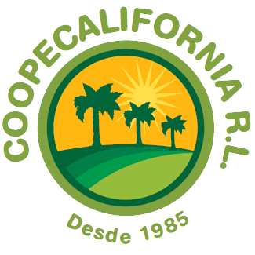
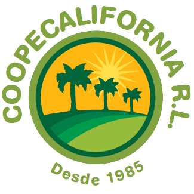
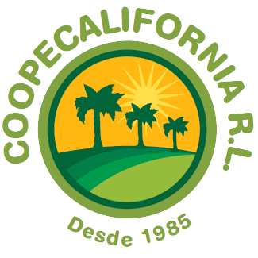

La información presentada en este esta página web forma parte de los resultados del proyecto de investigación VI-733-B9258 "Sistema de monitoreo satelital en los cultivos caña de azúcar y palma de aceite en dos cooperativas de Costa Rica" el cual se desarrolla en el Centro de Investigaciones Agronómicas de la Universidad de Costa Rica en colaboración con las cooperativas CoopeVictoria R.L. y CoopeCalifornia R.L.
Desarrollado por:
Bryan Alemán Montes (bryan.aleman@ucr.ac.cr)
Carlos Henríquez Henríquez (carlos.henriquez@ucr.ac.cr)
Emmanuel Jesús Céspedes Rivera (emmanuel.cespedes@ucr.ac.cr)
